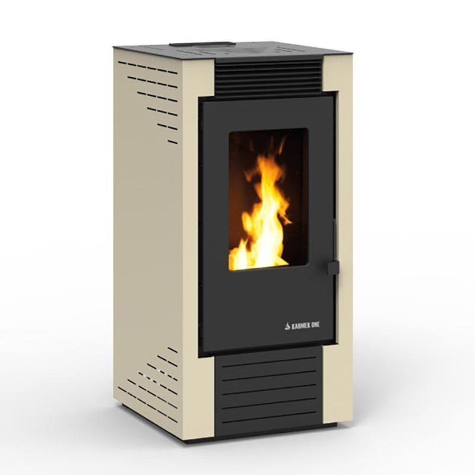

Lisbona S 7 kW - Karmek One

- Peć na pelete za proizvodnju vrućeg zraka i prisilnom konvekcijom topline
- Čelična konstrukcija, čelične obloge, rešetka od lijevanog željeza
- Ulazna snaga: 8,71 kW
- Izlazna snaga: 7,75 kW
- Korisnost: 88,98%
- Volumen ambijenta: 142 - 260 m³
- Potrošnja goriva: 0,94 - 1,77 kg/h
- Kapacitet spremnika: 13 kg
- Stražnji ispust dima
- Nazivna el. snaga: 82 W
- Promjer ispusta dimnih plinova: 80 mm
- Dimenzije: 460×920×490 mm
- Masa: 95 kg
Cijena na upit